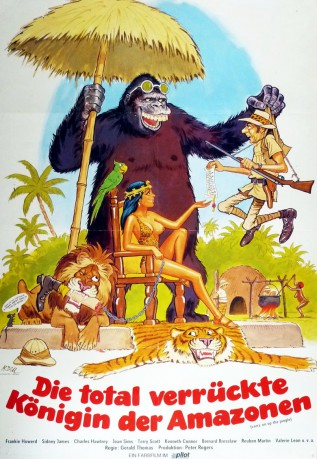

#11792 Carry On 19 - Ist ja irre - Die total verrückte Königin der Amazonen
Alternativ: Carry On Up the Jungle (Englischer Titel)
 
 IMDB-Wertung: 6.0 / 10
IMDB-Wertung: 6.0 / 10  Metascore: 0
Metascore: 0 
Professor Inigo Tinkle führt eine Expedition durch den afrikanischen Dschungel, um den seltenen Oozlum-Vogel zu finden (er ist so selten, weil er seine eigenen Eier nicht wiederfinden kann). Alle Teilnehmer der Expedition haben ihren eigenen Grund für die Teilnahme an dieser Mission, darunter der Jäger Bill Boosey, der immer wieder seiner kleinen Flasche Whisky zuspricht, und Lady Bagley. Während ihrer Suche treffen sie auf Jungle Boy, von dem Lady Bagley glaubt, er sei ihr seit langem verschollener Sohn - doch nicht nur das. Auch ihr schon seit langem als vermisst geglaubter Ehemann taucht wieder auf - als einziger Mann unter lauter Amazonen. Und diese freuen sich darüber, endlich mal wieder ein paar neue Männer in die Finger zu bekommen.
Jahr: 1970
Dauer: 86 Minuten
FSK: 12
Land: England Studio: Carol Media HomeTonspuren:
Untertitel:
Auflösung: SD (576x352) Größe: 699 MB
Genre: Komödie, Abenteuer
Regisseur: Gerald Thomas
Drehbuch: Talbot Rothwell
Soundtrack: Eric Rogers
Darsteller:
- Frankie Howerd als Professor Inigo Tinkle
 Sidney James als Bill Boosey
Sidney James als Bill Boosey Charles Hawtrey als Tonka the Great / Walter Bagley
Charles Hawtrey als Tonka the Great / Walter Bagley Joan Sims als Lady Evelyn Bagley
Joan Sims als Lady Evelyn Bagley Terry Scott als Ugh, the Jungle Boy
Terry Scott als Ugh, the Jungle Boy Kenneth Connor als Claude Chumley
Kenneth Connor als Claude Chumley Bernard Bresslaw als Upsidaisi
Bernard Bresslaw als Upsidaisi- Jacki Piper als June
 Valerie Leon als Leda
Valerie Leon als Leda- Edwina Carroll als Nerda
- Danny Daniels als Nosha Chief
- Heather Emmanuel als Pregnant Lubi (uncredited)
- John Ashley Hamilton als Nosha (uncredited)
 Jeffery Kissoon als Nosher (uncredited)
Jeffery Kissoon als Nosher (uncredited)- Roy Stewart als Nosha (uncredited)
- Reuben Martin als Gorilla
- Valerie Moore als Lubi Lieutenant
- Cathi March als Lubi Lieutenant
- Yemi Goodman Ajibade als
- John Adewole als King (uncredited)
- Nina Baden-Semper als Girl Nosha (uncredited)
- Oscar James als Nosha Warrior (uncredited)
- Willie Jonah als Nosha (uncredited)
- Chris Konyils als Nosha (uncredited)
- Verna Lucille MacKenzie als Gong Lubi (uncredited)
- Shalini Waran als Lubby Dubby Tribe member (uncredited)
- Lincoln Webb als Nosha with Girl (uncredited)
Datei: X:\7+mehr(A-Z)\Carry On\Carry On 19 - Ist ja irre - Die total verrückte Königin der Amazonen (1970, FSK12, 576x352).avi seit 20.09.2019
Festplatte: HD Collection-7+mehr(A-Z)+Person
 Es gibt insgesamt 33 Filme in der Gruppe '7+mehr(A-Z)\Carry On'
Es gibt insgesamt 33 Filme in der Gruppe '7+mehr(A-Z)\Carry On'